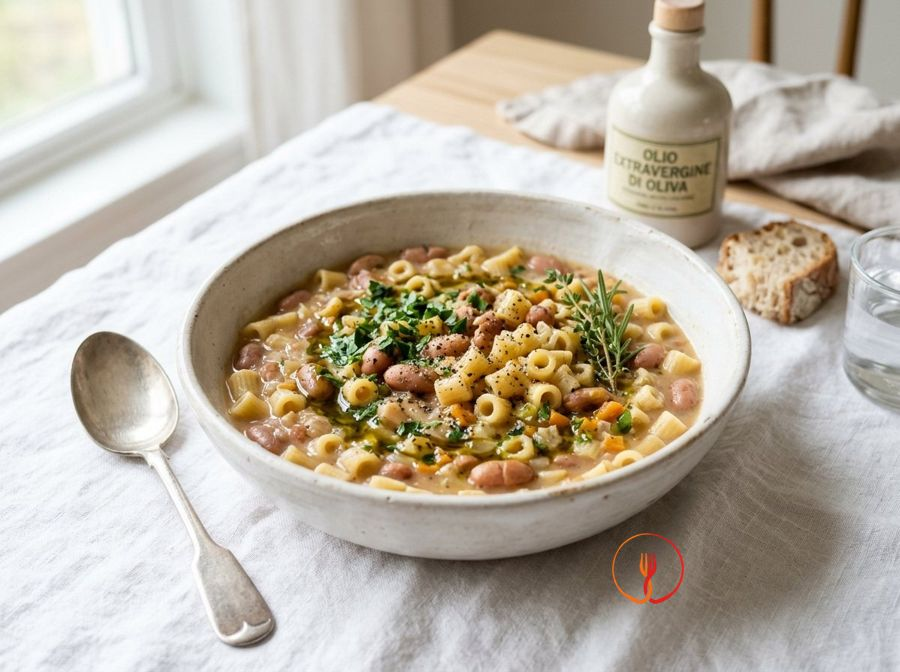

Traditional Pasta and Beans
A staple of Italian 'cucina povera' (peasant cooking) that provides a complete protein profile thanks to the combination of grains and legumes. This version focuses on natural creaminess from the starches, avoiding animal fats and highlighting the excellence of extra virgin olive oil.
Ingredients
- Short pasta such as ditalini rigati or mixed pasta (Pasta mista)280 g
- Dried Borlotti beans (soaked for 12 hours)250 g
- Extra virgin olive oil40 ml
- Brown onion100 g
- Carrot80 g
- Celery stalk50 g
- Waxy potatoes120 g
- Tomato purée (thick concentrate)30 g
- Fresh rosemary1 sprig
- Unrefined sea salt10 g
Allergens
Gluten, Celery
Method
- Prepare an aromatic base by finely chopping the onion, carrot, and celery; heat 30ml of oil in a terracotta pot or a heavy-based stainless steel saucepan and sweat the vegetables over a low heat for 10 minutes until soft and translucent.
- Peel the potato and cut it into tiny cubes (about 5mm), add it to the base and sauté for 2 minutes so it begins to release its natural starches.
- Stir the tomato purée into the vegetables, mixing for 1 minute to toast it slightly: this step removes acidity and gives a deep amber colour to the soup.
- Add the Borlotti beans, previously soaked and carefully rinsed, and let them absorb the flavours of the vegetable base for about 3 minutes, stirring continuously.
- Cover everything with about 1.8 litres of hot water or homemade vegetable stock, adding the whole rosemary sprig so it can be easily removed later.
- Bring to the boil, then lower the heat to minimum and cover with a lid, leaving it to cook for about 60-75 minutes, or until the beans are tender but not falling apart.
- Remove the rosemary and take out about two ladles of beans and potatoes; blend them with a stick blender and pour the cream back into the pot to create the typical velvety texture.
- Season with salt and pour the pasta directly into the soup: cook it stirring often, as the thickness of the liquid tends to make it stick to the bottom (add a ladle of boiling water if necessary).
- Turn off the heat when the pasta is still very 'al dente', cover the pot and let it rest for 5 minutes: this rest is essential for the pasta to finish cooking through residual heat and for the flavours to meld perfectly.
- Serve in bowls, finishing with a drizzle of raw extra virgin olive oil (the remaining 10ml) and, if liked, a generous grinding of fresh black pepper.
Nutrition facts (estimate)
| Per serving (240 g) | Per 100 g | |
|---|---|---|
| Energy | 2071 kJ / 495.0 kcal | 862.9 kJ / 206.2 kcal |
| Protein | 22.0 g | 9.2 g |
| Carbohydrates | 78.0 g | 32.5 g |
| of which sugars | – g | – g |
| Fat | 12.0 g | 5.0 g |
| of which saturates | – g | – g |
| Fibre | – g | – g |
| Salt | – g | – g |
AI estimates based on average CREA / USDA data: indicative only, not a substitute for medical or dietitian advice.
Open the recipe in the app for the shopping list, ingredient sheets and nearby shops.